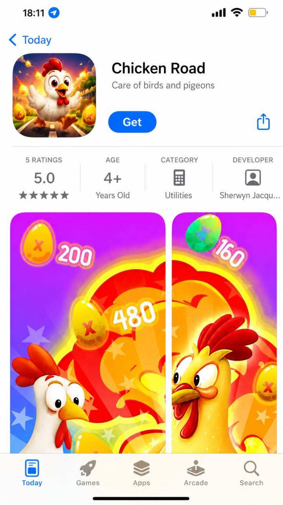

Casino ADM
Dove giocare a Chicken Road: come scegliere un operatore ADM
Cosa guardare in un casino online con licenza italiana prima di registrarti: concessione, prelievi, condizioni dei bonus e strumenti di autolimitazione.
Chicken Road
Come funziona il gioco crash, cosa dicono le recensioni, come verificare la licenza ADM e come riconoscere i siti clone.
Casino ADM
Cosa guardare in un casino online con licenza italiana prima di registrarti: concessione, prelievi, condizioni dei bonus e strumenti di autolimitazione.

Demo
Saldo virtuale illimitato, nessuna registrazione, stessa meccanica della versione reale. Cosa la demo ti insegna davvero e cosa no.

Sicurezza
La domanda più cercata in Italia. La risposta onesta: il rischio non è il gioco in sé, ma i siti clone non autorizzati che ne imitano il brand.

Guide
Puntata, avanzamento del pollo, moltiplicatore che sale e cash out prima della fine del round: la meccanica di Chicken Road senza giri di parole.